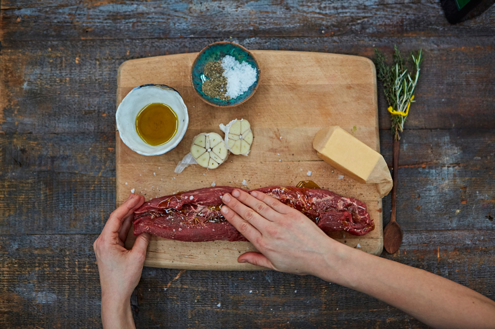
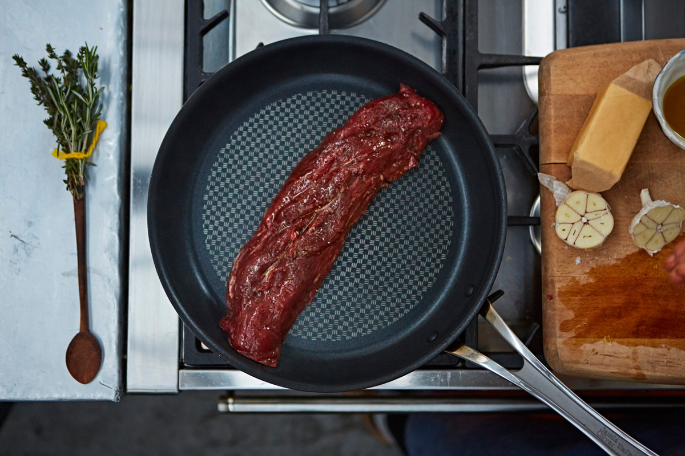
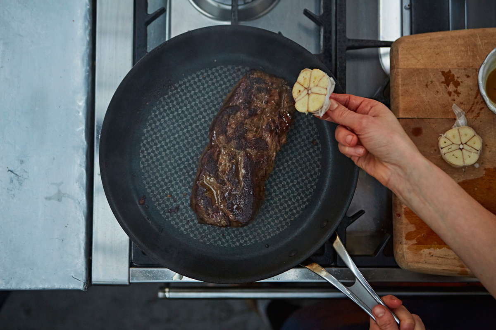
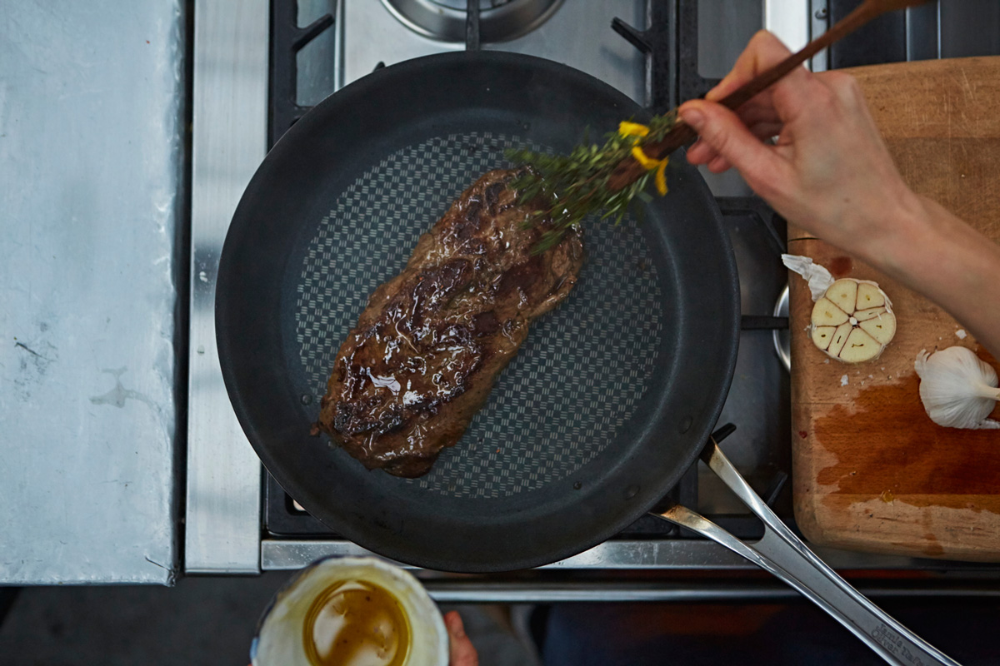
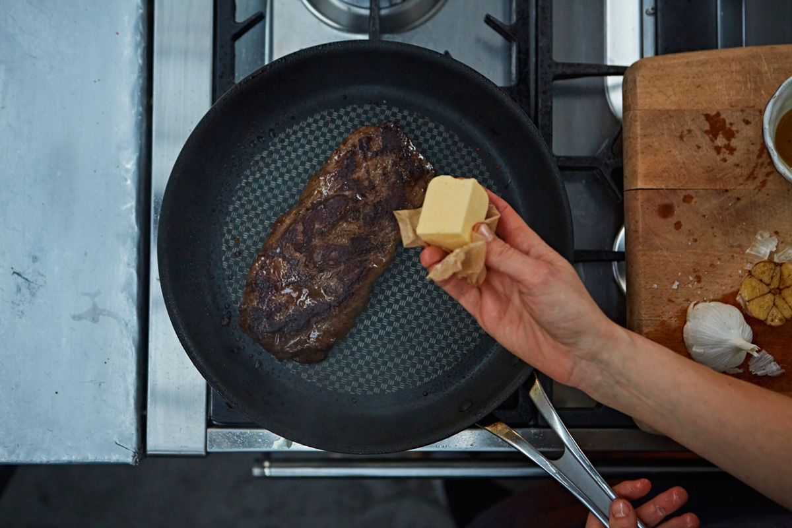

Step 1: Rub the steak all over with ingredients like olive oil, sea salt, and black pepper
The steak should not be refrigerated.
Step 2:Add the steak to a hot pan, then cook for 6 minutes for medium-rare.
Step 3:Rub the steak with a knob of butter- the sweetness from the butter will make it taste divine!
Halve a garlic clove and rub it over the steak every time you turn in.
Step 4: Creat a herb brush by tying woody herbs like thyme or rosemary to the handle of a wooden spoon and brush it over the steak every minute
Step 5: Rest the steak on a plate that can collect all the lovely juices for 2 minutes
